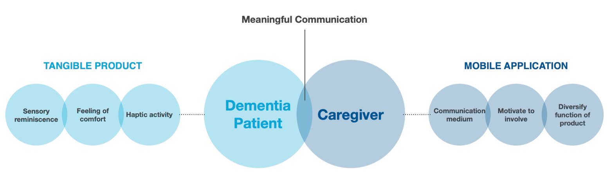
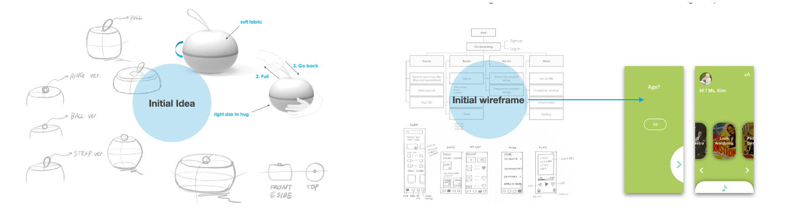
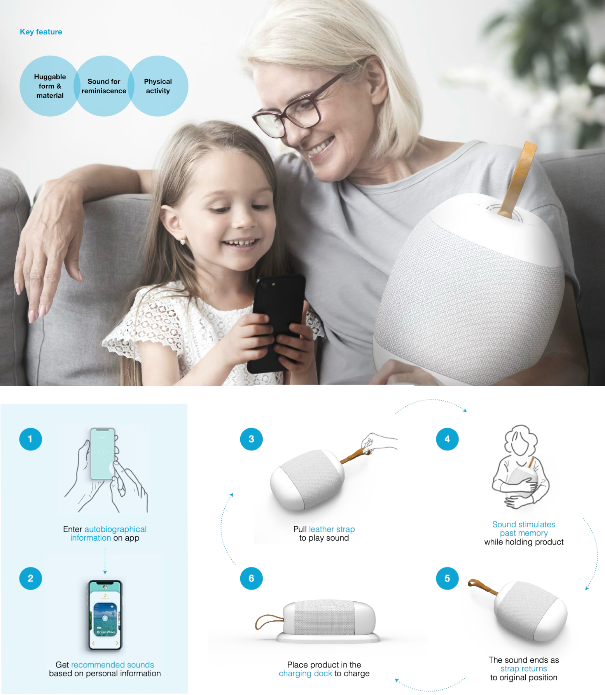

Designing IoT Products for Dementia
This project aims to design an IoT concepts for dementia. To support emotional and cognitive well-being in people with dementia, user research and sensory exploration were conducted to identify cognitive-emotional triggers. These insights were translated into interactive design oppotunities. As a result, an IoT concept, Sound Cushion, was designed and prototyped.
How might we improve communication and interaction to support people living with dementia?
The goal of this project was to improve communication and interaction between dementia patients in the early stages of the disease and their caregivers. Studies have shown that increasing haptic activity and promoting reminiscence can have positive effects on patients with dementia. To achieve this, the project aimed to develop an IoT product that facilitates this type of interaction, promoting meaningful communication and enhancing the experience for both the patient and the caregiver.

Concept Development.
For the tangible product, key features were defined as a huggable form and materials that promote emotional stability and attachment to the product, as well as physical activities that aid in alleviating dementia. For the mobile application, personalization features were incorporated to provide a personalized sound reminiscence experience, as memories are closely tied to personal past experiences. It was also important to design the application to be user-friendly, as it would be used by dementia patients and caregivers of various ages, from children to the elderly. Additionally, the user interface was designed to have a similar form factor to the tangible product.

Sound Cushion: Key features and scenario of use.
